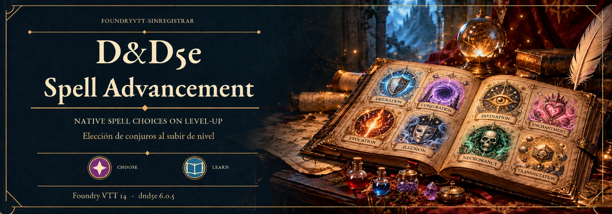
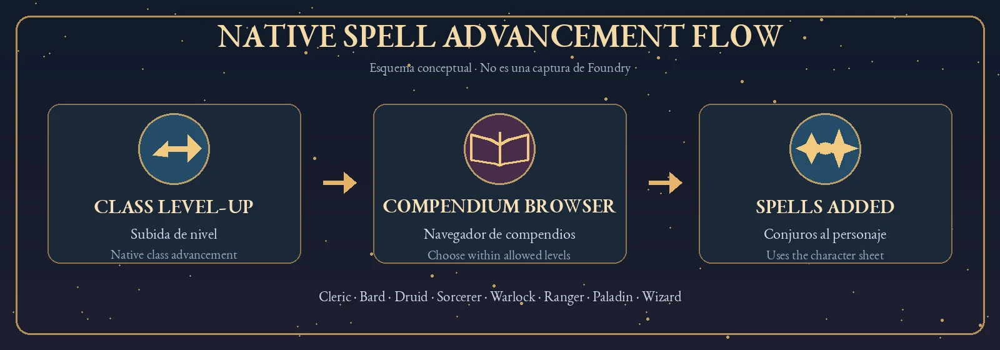

D&D5e Spell Advancement · v1.14.4 · Foundry VTT 14 · D&D5e 6.0.5 · MIT
GitHub · Releases · Issues / Incidencias · License / Licencia
Native D&D5e spell-choice advancements for PHB 2024 classes and selected subclasses in Foundry VTT.
Foundry VTT 14.367+ (verified on 14.368) and D&D5e 6.0.5+ (verified on 6.0.5). Relevant official PHB 2024 content must be installed separately.
Manifest URL: https://raw.githubusercontent.com/foundryvtt-sinregistrar/dnd5e-spell-advancement/main/module.json
Existing actors are not updated automatically. A GM can analyze and process compatible existing actors through the module settings; owners can also use the API. Imported spells can be reconciled as historical choices. See the README (Spanish) for the supported API calls and class identifiers.
No new spell compendium content is bundled. Replacing prepared spells after a long rest or level-up is not automated. Some subclass behavior, including Arcane Trickster identification, requires in-world verification.
Avances nativos para elegir conjuros en clases y subclases del PHB 2024 de D&D5e para Foundry VTT.
Foundry VTT 14.367+ (verificado en 14.368) y D&D5e 6.0.5+ (verificado en 6.0.5). El contenido oficial del PHB 2024 correspondiente debe estar instalado por separado.
URL del manifiesto: https://raw.githubusercontent.com/foundryvtt-sinregistrar/dnd5e-spell-advancement/main/module.json
Los actores existentes no se modifican automáticamente. Un GM puede analizar y procesar los actores compatibles desde los ajustes del módulo; los propietarios también pueden usar la API. Los conjuros importados pueden reconocerse como elecciones históricas. Consulta el README para las macros e identificadores disponibles.
No incluye nuevos compendios de conjuros. No automatiza el reemplazo de conjuros preparados tras un descanso largo o una subida de nivel. Algunas funciones de subclases, como la identificación del Tramposo arcano, requieren comprobación en una partida.

Conceptual illustration only, not an actual screenshot. / Ilustración conceptual, no es una captura real.
Real in-game examples: Cleric 1 → 2 and Wizard 5 → 6, plus processing existing actors. / Ejemplos reales: Clérigo 1 → 2 y Mago 5 → 6, además del procesamiento de actores existentes.
These screenshots include the D&D5e interface and other installed packages. The module specifically provides spell-choice advancements, native selection flow and imported-spell reconciliation. / Las capturas incluyen la interfaz de D&D5e y otros paquetes instalados. Este módulo aporta los avances de selección de conjuros, su integración nativa y la reconciliación de conjuros importados.
Step 3: choose a prepared spell / Paso 3: elegir nuevo conjuro preparado
Compendium Browser with Cleric spell list and filters / Navegador de Compendios con lista de Clérigo y filtros
Result: level 2 Cleric / Resultado final: Clérigo de nivel 2
Full 9-step Cleric sequence / Secuencia completa (9 pasos)
Spellbook spell-choice step / Elección de conjuros para el libro de conjuros
Wizard Compendium Browser / Navegador de Compendios para el Mago
Two spells recorded in the choice / Dos conjuros añadidos a la elección
Result: level 6 Wizard / Resultado final: Mago de nivel 6
Existing actors: analysis and processing queue / Procesamiento de actores existentes: análisis
Full 10-step Wizard sequence / Secuencia completa (10 pasos)
Community module / Módulo de la comunidad
By foundryvtt-sinregistrar